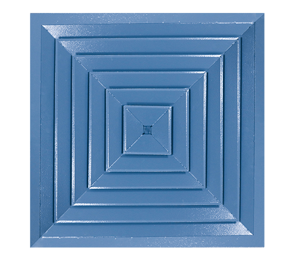

Вентиляционные решетки и аксессуары
Потолочный анемостат

Цена по запросу
Оставить заявку
Плоский потолочный анемостат ГАЛ-4С предназначен для распределения по направлению потока воздуха в системах вентиляции, кондиционирования и воздушного отопления. ГАЛ-4С используется в качестве конечных элементов систем распределения воздуха в потолках общественных зданий, офисов, магазинов, производственных помещений. Корпус может быть выполнен как из алюминия, так и из оцинкованного металла. Отличная замена потолочному диффузору.
Цена по запросу
Оставить заявку
ГАЛ-4С изготавливается из цельного листа (алюминий, оцинковка), окрашенного методом порошкового напыления. Стандартный цвет — белый, RAL 9016. Возможна окраска под заказ в любой цвет RAL. Эта серия плоских диффузоров является отличной и экономичной заменой стандартному диффузору.